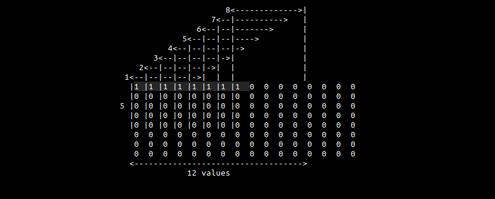
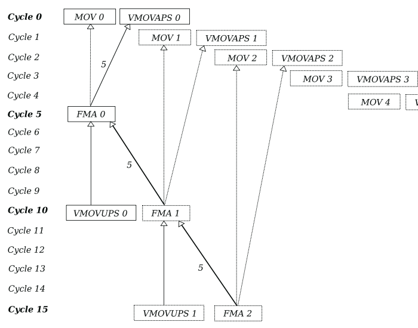
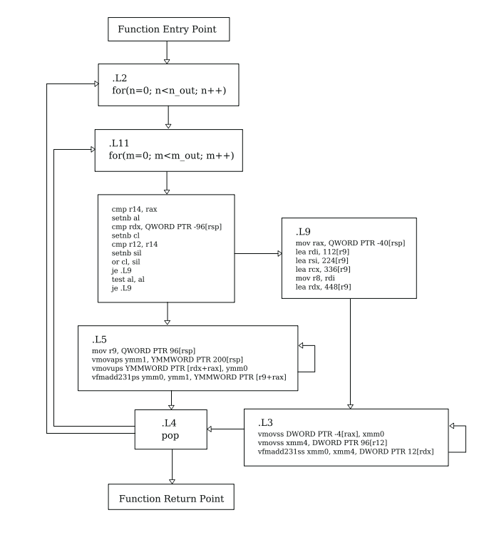
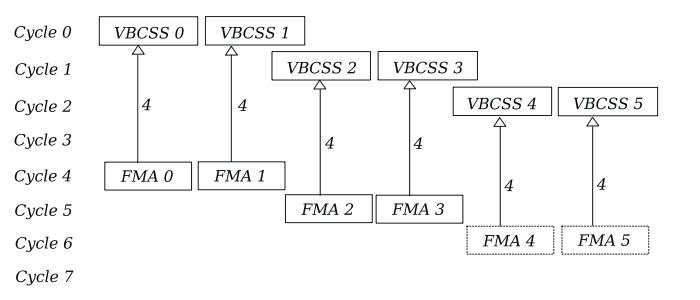
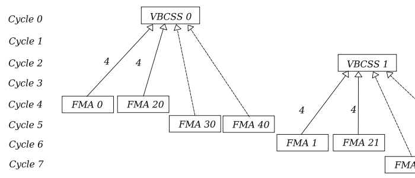

memory and ILP handling in 2D convolutions
a convolution is defined as an integral that expresses the amount of overlap two signals represented by functions of time \(f(t)\) and \(g(t)\) have as one is reflected and shifted on top of the other. It is usually denoted by the convolution operator \(f * g\) :
\[ (f * g)(t) = \int_{-\infty}^{\infty} f(t-\tau)g(\tau) d\tau \]
where \(f(t)\) is a one-dimensional signal and \(g(t)\) is the response of a filter. As \(t\) changes, we calculate the area under the function \(f(-\tau)\) weighted by \(g(\tau)\). The negation of \(\tau\) rotates \(f\) 180\(^\circ\) about the origin. \(t\) shifts the origin of \(f\) along the \(\tau\)-axis. This can be applied on either signal, because \( (f*g)(t) = (g*f)(t) \) :
\[ \int_{-\infty}^{\infty} f(t-\tau)g(\tau) d\tau = \int_{-\infty}^{\infty} f(\tau)g(t-\tau) d\tau \]
in 2 dimensional image processing, the continuous convolution integral can be expressed as a function in a two dimensional spatial domain of coordinates \(x\) and \(y\) :
\[ (f * * g)(x, y) = \int_{-\infty}^{\infty} \int_{-\infty}^{\infty} f(x-\tau_i, y-\tau_j)g(\tau_i, \tau_j) d\tau_i d\tau_j \]
storing an image digitally imposes some restrictions due to a limited amount of resources. The continuous signals are sampled and quantised over a finite range to discrete values represented as tensors. The operation becomes a function of sums limited by the bounds of the filter size \(K\) :
\[ (f**g)(x, y) \equiv \sum_{\tau_i=0}^{K} \sum_{\tau_j=0}^{K} f_{x-\tau_i, y-\tau_j} \cdot g_{\tau_i, \tau_j} \]
where \(f\) is the input image \(f \in \mathbb{R}^{N \times M}\) and \(g\) is the filter \(g \in \mathbb{R}^{K \times K}\), an array of floats that serve as the trainable parameters of the network commonly initialized to a random distribution and trained using stochastic gradiant descent.
the discrete value of the signal at some index \(f_{i, j}\) is usually stored in memory as a vector of three integers \( [r, g, b]^{\intercal}\) where each takes a value \( 0 \le r,g,b \lt 2^x \) were x is the number of bits allocated to store the integer. We can represent this as a third channel dimension denoted as \(C\). Most networks also extend the filter into multiple channels in order to extract a higher number of features.
\[ f_{C \times M \times N} = \begin{bmatrix} R_{M \times N} \\ G_{M \times N} \\ B_{M \times N} \end{bmatrix}, \quad R_{M \times N} = \begin{bmatrix} r_{0, 0} & r_{0, 1} & \ldots & r_{0, N} \\ r_{1, 0} & r_{1, 1} & \ldots & r_{1, N} \\ \vdots & \vdots & \ddots & \vdots \\ x_{M, 0} & x_{M, 1} & \ldots & x_{M, N} \end{bmatrix}\]
it is also common to take as input a batch of multiple images denoted as \(B\) as opposed to a single image. Thus, \(f\) becomes a tensor of rank 4 \(f \in \mathbb{Z}^{B \times C \times N \times M}\) representing a batch of \(B\) images, each with \(C\) channels of size \(N \times M\). This yields a filter \(g \in \mathbb{R}^{1 \times C \times K \times K}\) where \(B=1\) because we intend to use the same filter on all images.
we will denote the output tensor as \(\gamma \in \mathbb{R}^{B \times C \times M_{out} \times N_{out}}\).
\[ \gamma_{b, x, y} = \sum^K_{\tau_i}\sum^K_{\tau_j} f_{b, c, x-\tau_m, y-\tau_n} \cdot g_{c, \tau_m, \tau_n}\]
where the output size is given by:
\[ N_{out} = \frac{N + 2p - K}{s} + 1\]
where \(p\) is the padding size and \(s\) is the stride.
convolution vs cross-correlation
a convolution integral that doesn't reflect the shifted signal is known as a cross-correlation, denoted as \((f \star g)(t)\) :
\[ (f \star g)(t) = \int_{-\infty}^{\infty} f(\tau)g(\tau+t) d\tau \]
you will often find it defined using the complex conjugate of \(f\) to account for complex signals :
\[ (f \star g)(t) = \int_{-\infty}^{\infty} \overline{f(\tau)}g(\tau+t) d\tau\]
if the shifted signal is symmetric, cross-correlation and convolution become the same operation. We will be shifting the filter tensor \(g\), which is randomly initialized to some distribution. If we think of this tensor as being filled with a probability density function \(\xi\), it becomes symmetric. We can, therefore, remove the complexity of having to reflect it. The discrete version becomes:
\[(f \star g)(x) = \sum_{\tau=0}^K f_{\tau}g_{x+\tau} \]
in the case of two dimensional images:
\[(f \star g)(x, y) = \sum_{\tau_i}^K\sum_{\tau_j}^K f_{\tau_i, \tau_j}g_{x+\tau_i, y+\tau_j} \]
therefore our equation becomes:
\[ \gamma[b, x, y] = \sum^K_{\tau_i}\sum^K_{\tau_j} f[b, c, \tau_i, \tau_j] \cdot g[1,c, \tau_i+x, \tau_j+y]\]
setup
the code is running on:
- ryzen 9 3900x 12 core @ 4.6GHz
- 128GB DDR4 @ 3200MHz
- MSI MAG B550 TOMAHAWK (MS-7C91)
- ubuntu 22.04.3 - kernel 6.5.0-41-generic
compiled with gcc 11.4.0 with flags: -O3 -match=native
while the algorithm is agnostic to it's inputs, we'll consider a batch of 512 images from the MNIST dataset, stored linearly in memory as single precision floats with a height and width of \(M=N=28\) and one luminiosity channel:
\[ f \in \mathbb{R}^{512 \times 1 \times 28 \times 28}, \quad 0 \le f_{b,c,i,j} \lt 256\]
the filter will have one channel and a height and width of \(K=5\). A multi channel implementation will not add significant overhead. It can be initialized to something like a kaiming uniform distribution:
\[ g \in \mathbb{R}^{1 \times 1 \times 5 \times 5} \sim U \begin{bmatrix} -\frac{\sqrt{6}}{\sqrt{K + K + 1}}, \frac{\sqrt{6}}{\sqrt{K+K+1}} \end{bmatrix} \]
code
a naive implementation would be :
void naive_conv2d(const float* f, const float* g, float* out, const int K,
const int N, const int M, const int B)
{
const int n_out = (N-K)/1+1; // (img_size-filter_size) / stride + 1
const int m_out = (M-K)/1+1;
const int bo = n_out*m_out; // batch stride out
const int bi = N*M; // batch stride in
int b, n, m, i, j;
for(b=0; n < B; n++)
for(n=0; n < n_out; n++)
for(m=0; m < m_out; m++)
for(i=0; i < K; i++)
for(j=0; j < K; j++)
out[b*bo+n*n_out+m] += f[b*bi+(n+i)*N+j+m] * g[i*K+j];
} called on heap allocated unaligned memory.
because of the high number of float operations, when compiled, the program makes use of SIMD vector instructions instead of x87 precision ones. The CPU supports AVX-256 and contains 16 256-bit ymm logical registers per core. The program first tries to fill as many of these registers as possible with broadcasted (vbroadcastss) values of the filter g from the general purpose register r12. Because there are 25 distinct filter values, it stores the overflow in stack variables between 392[rsp] and 104[rsp]:
.L11:
[ . . . ]
vbroadcastss ymm0, DWORD PTR 60[r12]
lea rax, 16[r13]
vbroadcastss ymm1, DWORD PTR 56[r12]
lea r8, 4[r13]
mov QWORD PTR -32[rsp], rax
lea rax, 116[r13]
vbroadcastss ymm15, DWORD PTR [r12]
vbroadcastss ymm14, DWORD PTR 4[r12]
mov QWORD PTR -24[rsp], rax
lea rax, 120[r13]
vbroadcastss ymm13, DWORD PTR 8[r12]
lea rdi, 8[r13]
mov QWORD PTR -16[rsp], rax
lea rax, 124[r13]
vbroadcastss ymm12, DWORD PTR 12[r12]
lea rsi, 12[r13]
mov QWORD PTR -8[rsp], rax
lea rax, 128[r13]
vbroadcastss ymm11, DWORD PTR 16[r12]
lea rcx, 112[r13]
mov QWORD PTR [rsp], rax
lea rax, 224[r13]
vbroadcastss ymm10, DWORD PTR 20[r12]
lea rbx, 456[r13]
mov QWORD PTR 8[rsp], rax
lea rax, 228[r13]
vbroadcastss ymm9, DWORD PTR 24[r12]
lea r11, 460[r13]
mov QWORD PTR 16[rsp], rax
lea rax, 232[r13]
vbroadcastss ymm8, DWORD PTR 28[r12]
lea r10, 464[r13]
vmovaps YMMWORD PTR 392[rsp], ymm0
vbroadcastss ymm0, DWORD PTR 64[r12]
mov QWORD PTR 24[rsp], rax
lea rax, 236[r13]
mov QWORD PTR 32[rsp], rax
lea rax, 240[r13]
mov QWORD PTR 40[rsp], rax
lea rax, 336[r13]
vbroadcastss ymm7, DWORD PTR 32[r12]
mov QWORD PTR 48[rsp], rax
lea rax, 340[r13]
vbroadcastss ymm6, DWORD PTR 36[r12]
mov QWORD PTR 56[rsp], rax
lea rax, 344[r13]
vbroadcastss ymm5, DWORD PTR 40[r12]
vbroadcastss ymm4, DWORD PTR 44[r12]
mov QWORD PTR 64[rsp], rax
lea rax, 348[r13]
vbroadcastss ymm3, DWORD PTR 48[r12]
vbroadcastss ymm2, DWORD PTR 52[r12]
vmovaps YMMWORD PTR 360[rsp], ymm0
vbroadcastss ymm0, DWORD PTR 68[r12]
mov QWORD PTR 72[rsp], rax
lea rax, 352[r13]
mov QWORD PTR 80[rsp], rax
lea rax, 448[r13]
mov QWORD PTR -120[rsp], r14
mov r14, r12
mov QWORD PTR 88[rsp], rax
lea rax, 452[r13]
vmovaps YMMWORD PTR -88[rsp], ymm1
mov QWORD PTR 96[rsp], rax
xor eax, eax
vmovaps YMMWORD PTR 328[rsp], ymm0
vbroadcastss ymm0, DWORD PTR 72[r12]
vmovaps YMMWORD PTR 296[rsp], ymm0
vbroadcastss ymm0, DWORD PTR 76[r12]
vmovaps YMMWORD PTR 264[rsp], ymm0
vbroadcastss ymm0, DWORD PTR 80[r12]
vmovaps YMMWORD PTR 232[rsp], ymm0
vbroadcastss ymm0, DWORD PTR 84[r12]
vmovaps YMMWORD PTR 200[rsp], ymm0
vbroadcastss ymm0, DWORD PTR 88[r12]
vmovaps YMMWORD PTR 168[rsp], ymm0
vbroadcastss ymm0, DWORD PTR 92[r12]
vmovaps YMMWORD PTR 136[rsp], ymm0
vbroadcastss ymm0, DWORD PTR 96[r12]
mov r12, r15
mov r15, r14
mov r14, r9
vmovaps YMMWORD PTR 104[rsp], ymm0an example store relative to the rsp stack pointer would be:
vbroadcastss ymm0, DWORD PTR 72[r12]
vmovaps YMMWORD PTR 296[rsp], ymm0 we end up with 14 ymm15-2 registers filled with broadcasted values of g and 11 stack variables of 32 bytes we can easily load. Any variable stored in the stack can be assumed to be in L1D cache. Intermittently, the program also stores pointers at different offsets into f from the register r13. For example :
lea rax, 352[r13]
mov QWORD PTR 80[rsp], rax
lea rax, 448[r13]
[ . . . ]
mov QWORD PTR 88[rsp], rax lea, or load effective address grabs the location in memory of the second operand and stores it in the first operand. It works like &variable in C. We store 17 pointers of 8 bytes each. These offsets represent almost all of the read addresses of f for a single filter position. To understand the values we first have to look at how the compiler decided to vectorize the operation.
if we were to lay out 8 consecutive horizontal positions of the filter with a stride of 1, we would notice that the first 8 consecutive array elements of f correspond to the same element of the filter for each of the individual filter positions:

we'll designate a ymm register to accumulate into. We then load the first 8 values from f, multiply them by the first element of g and add them to the output register. Next, we stride by one element (4 bytes) and repeat \(K\) number of times. By this point we have read into memory 12 individual values from f. We then jump to the beginning of the next matrix row and repeat \(K\) number of times. We end up computing 8 consecutive convolutions in parallel.
we'll refer to this to this part of the program as the kernel.
in pseudocode :
\(i, j \leftarrow 0\)
ymm0 \(\leftarrow\) broadcast 0
while \(i < K\):
while \(j < K\):
ymm1 \(\leftarrow\) \(f + j\), read 32 bytes
ymm2 \(\leftarrow\) \(g + j\), broadcast 4 bytes to 32 bytes
ymm0 \(\leftarrow\) (ymm1 * ymm2) + ymm0
\(j \leftarrow j + 1\)
\(f \leftarrow f + 96\) bytes
\(g \leftarrow g + K*4\) bytes
\(i \leftarrow i + 8\)
this yields 5 32-byte reads per row, iterated for 5 rows, resulting in a total of 25 load instructions from f. The 17 stack variables store the address for the majority of these necessary load instructions, with the exception of some that are loaded directly into registers:
lea r8, 4[r13]
lea rdi, 8[r13]
lea rsi, 12[r13]
lea rcx, 112[r13]
lea rbx, 456[r13]
lea r11, 460[r13]
lea r10, 464[r13] r13 with the first 3 registers point to the first 4 loads of the first row, rcx points to the first address from the second row and the rest point to the first 3 addresses of the 5th row. Together with the previous 17 addresses and r13 itself, they total 25.
as we'll see later, these addresses are accessed sequentially, so loading a register with the addresses of the last row is unnecessary. We can guess that the compiler intended to implement a form of software pipelining, an out of order optimization method used on loops that are not inter-dependent across iterations, mimicking CPU pipelining, but the loops turned out to be dependent.
we advance into the actual computation:
.L5:
vmovups ymm0, YMMWORD PTR 0[r13+rax]
vfmadd213ps ymm0, ymm15, YMMWORD PTR [rdx+rax]
mov r9, QWORD PTR -32[rsp]
vmovups YMMWORD PTR [rdx+rax], ymm0
vfmadd231ps ymm0, ymm14, YMMWORD PTR [r8+rax]
vmovups YMMWORD PTR [rdx+rax], ymm0
vfmadd231ps ymm0, ymm13, YMMWORD PTR [rdi+rax]
vmovups YMMWORD PTR [rdx+rax], ymm0
vfmadd231ps ymm0, ymm12, YMMWORD PTR [rsi+rax]
vmovups YMMWORD PTR [rdx+rax], ymm0
vfmadd231ps ymm0, ymm11, YMMWORD PTR [r9+rax]
mov r9, QWORD PTR -24[rsp]
vmovups YMMWORD PTR [rdx+rax], ymm0
vfmadd231ps ymm0, ymm10, YMMWORD PTR [rcx+rax]
vmovups YMMWORD PTR [rdx+rax], ymm0
vfmadd231ps ymm0, ymm9, YMMWORD PTR [r9+rax]
mov r9, QWORD PTR -16[rsp]
vmovups YMMWORD PTR [rdx+rax], ymm0
vfmadd231ps ymm0, ymm8, YMMWORD PTR [r9+rax]
mov r9, QWORD PTR -8[rsp]
vmovups YMMWORD PTR [rdx+rax], ymm0
vfmadd231ps ymm0, ymm7, YMMWORD PTR [r9+rax]
mov r9, QWORD PTR [rsp]
vmovups YMMWORD PTR [rdx+rax], ymm0
vfmadd231ps ymm0, ymm6, YMMWORD PTR [r9+rax]
mov r9, QWORD PTR 8[rsp]
vmovups YMMWORD PTR [rdx+rax], ymm0
vfmadd231ps ymm0, ymm5, YMMWORD PTR [r9+rax]
mov r9, QWORD PTR 16[rsp]
vmovups YMMWORD PTR [rdx+rax], ymm0
vfmadd231ps ymm0, ymm4, YMMWORD PTR [r9+rax]
vmovups YMMWORD PTR [rdx+rax], ymm0
mov r9, QWORD PTR 24[rsp]
vmovaps ymm1, YMMWORD PTR -88[rsp]
vfmadd231ps ymm0, ymm3, YMMWORD PTR [r9+rax]
mov r9, QWORD PTR 32[rsp]
vmovups YMMWORD PTR [rdx+rax], ymm0
vfmadd231ps ymm0, ymm2, YMMWORD PTR [r9+rax]
mov r9, QWORD PTR 40[rsp]
vmovups YMMWORD PTR [rdx+rax], ymm0
vfmadd231ps ymm0, ymm1, YMMWORD PTR [r9+rax]
mov r9, QWORD PTR 48[rsp]
vmovaps ymm1, YMMWORD PTR 392[rsp]
vmovups YMMWORD PTR [rdx+rax], ymm0
vfmadd231ps ymm0, ymm1, YMMWORD PTR [r9+rax]
mov r9, QWORD PTR 56[rsp]
vmovaps ymm1, YMMWORD PTR 360[rsp]
vmovups YMMWORD PTR [rdx+rax], ymm0
vfmadd231ps ymm0, ymm1, YMMWORD PTR [r9+rax]
mov r9, QWORD PTR 64[rsp]
vmovaps ymm1, YMMWORD PTR 328[rsp]
vmovups YMMWORD PTR [rdx+rax], ymm0
vfmadd231ps ymm0, ymm1, YMMWORD PTR [r9+rax]
mov r9, QWORD PTR 72[rsp]
vmovaps ymm1, YMMWORD PTR 296[rsp]
vmovups YMMWORD PTR [rdx+rax], ymm0
vfmadd231ps ymm0, ymm1, YMMWORD PTR [r9+rax]
mov r9, QWORD PTR 80[rsp]
vmovaps ymm1, YMMWORD PTR 264[rsp]
vmovups YMMWORD PTR [rdx+rax], ymm0
vfmadd231ps ymm0, ymm1, YMMWORD PTR [r9+rax]
mov r9, QWORD PTR 88[rsp]
vmovaps ymm1, YMMWORD PTR 232[rsp]
vmovups YMMWORD PTR [rdx+rax], ymm0
vfmadd231ps ymm0, ymm1, YMMWORD PTR [r9+rax]
mov r9, QWORD PTR 96[rsp]
vmovaps ymm1, YMMWORD PTR 200[rsp]
vmovups YMMWORD PTR [rdx+rax], ymm0
vfmadd231ps ymm0, ymm1, YMMWORD PTR [r9+rax]
vmovaps ymm1, YMMWORD PTR 168[rsp]
vmovups YMMWORD PTR [rdx+rax], ymm0
vfmadd231ps ymm0, ymm1, YMMWORD PTR [rbx+rax]
vmovaps ymm1, YMMWORD PTR 136[rsp]
vmovups YMMWORD PTR [rdx+rax], ymm0
vfmadd231ps ymm0, ymm1, YMMWORD PTR [r11+rax]
vmovaps ymm1, YMMWORD PTR 104[rsp]
vmovups YMMWORD PTR [rdx+rax], ymm0
vfmadd231ps ymm0, ymm1, YMMWORD PTR [r10+rax]
vmovups YMMWORD PTR [rdx+rax], ymm0
add rax, 32
cmp rax, 96
jne .L5
mov r9, r14
mov r14, QWORD PTR -120[rsp]
mov rax, r15
mov r15, r12
lea rdi, 112[r9]
mov r12, rax the first 3 vfmaddps instructions are highlighted for convenience. The first instance is vfmadd213ps and all subsequent ones are vfmadd231ps. The numbers indicate the order of the operands, 213 means operand 2 is multiplied to 1, added with 3 and stored in 1. The first operand ymm0 serves as the accumulation register, the second operand makes use of the previousely broadcasted values of g in registers ymm15-2 and afterwards loads from memory into ymm1:
vmovaps ymm1, YMMWORD PTR 392[rsp] the third operand points to the values of f and makes use of the previously stored pointers to which we add the register rax. Usually register addition is straightforward, we simply add the values stored inside. This time, however, the registers contain memory addresses:
mov r9, QWORD PTR 96[rsp] The memory in question is virtual memory, who is described in the AMD64 Architecture Guide as consisting of the entire address space available to programs. It is a large linear-address space that is translated by a combination of hardware and operating-system software to a smaller physical-address space, parts of which are located in memory and parts on disk or other external storage media.
In the case of my CPU, it is a 64-bit linear memory space that is by default unsegmented. Operating systems create segmentations between code, stack and data for memory protection purposes. The base address of the memory space is 0 and a location in it is specified using a segment:offset logical address, often refered to as a long pointer. Inside of a segment, we only need the offset part of the logical address, refered to as an effective address, or a near pointer. All of these addresses are manipulated as unsigned integers offsets from the root of the memory space and support integer arithmetic.
the register rax is used as both a displacement into f and for triggering the loop back to .L5. In the C code this loop tracks m_out. The previousely computed addresses don't need to be computed again and we simply offset from them. This has a latency of 0 cycles. The register starts at 0 and is incremented by 32 bytes each loop until it is equal to 96, so 3 loops, repeating the 8 convolutions until they compute 24 values. Before this loop, the last operation with rax is a lea into the address 448[r13]. Why is this address treated as 0?
rax is the 64-bit extension of eax. They refer to the same logical register, so the instruction that follows:
xor eax, eaxsets the lower half of the register to 0. Writing to eax automatically clears the upper 32 bits, so the entire register is now 0.
The third operand is also the only one that is grabbed directly from memory. We can guarantee the other two are in L1D, but this one could be anywhere if not properly prefetched. Thankfully, modern CPUs are really good at prefetching, so we are unlikely to incur a cache miss, but our later implementations will explicitly load L1D and L2 cache.
let us turn our attention towards instruction-level parallelism.
modern CPUs are superscalers and contain multiple execution units that can process instructions concurrently each cycle. For example, the Floating Point Unit on the Zen 2 microarchitecture manages 4 execution pipes 256-bit wide that can handle x87, MMX, SSE and AVX instructions. For single precision floats, this puts us at 32 FLOPs/cycle. But while we can launch up to 4 instructions per cycle, we are still held back by the actual execution time until that instruction is resolved and retired. This is refered to as an instruction's latency. From Agner Fog's instruction tables we learn that both VFMADDPS and VADDPS have a latency of 5 cycles, meaning we can only expect the output to be usable in another computation after 5 cycles.
in the case of a load instruction like VMOVUPS who also has a 5 cycle latency, it only holds true if the data is already in L1D cache. If there is a cache miss, we also have to add the latency of bringing the data into the L1 cache. This latency depends on where the data is. The worst case scenario is the RAM, in which case we have to add 66 ns and 38 cycles, which is bound to stall the process in the CPU. You can see the cost of other cache layers for Zen 2 here.
data dependencies are another reason we fail to schedule parallel execution. Let us imagine a loop that calls two instructions:
loop:
add rax, 1
add rax, 2 the second call to add has to wait for the first one to resolve before executing. It is data dependent on the first call and can not be processed in parallel. Another method of achieving parallelism is software pipelining, in which we would unroll the loop and attempt to execute different iterations in parallel. Here we hit the second type of dependency, inter-loop. We cannot begin to work on the second iteration of the loop without waiting for the first iteration to fully resolve the value of rax. Dependencies are a property of programs, and depend entirely on the logical algorithm chosen. The above example cannot be run in parallel, so we decide to change the algorithm to use an extra register:
loop:
add rax, 1
add rbx, 2
add rax, rbxnow both add instructions are independent and can run in parallel. The cost of a loop iteration is the latency of a single add as opposed to 2 in the last example. Note this example is still inter-loop dependent.
often times when we have to translate a software algorithm into a hardware circuit on a PCB, we deal with two properties: data flow and control flow. They serve as a framework to understand dependencies.
data flow describes the logic of the program. It follows the informational input as it is digested through the instruction pipeline. It is often visualised in the form of a data flow graph where each node is an operation, or a specific instruction, and every edge is a data dependency. If we were to execute two instructions in a way that would violate a data edge relationship, we would change the logic of the program. It follows that instructions with no data edge relationship can be executed out of order.
control flow describes the implementation of the data flow, the order of operations as described by the program. The fact that two operations have to execute sequentially here is not a contraint of a program's logic but a choice on how that logic was computationally implemented. It is often visualised as a control flow graph where each node is an operation, or an instruction, and each edge is the flow of control. The goal is to reduce control flow dependencies.
they are similar, but track different things. Consider the example:
a:
noop
jmp b
loop:
b:
add eax, 1
jmp a the jump to a does nothing, yet the loop still has to yield control.
both are needed to fully describe a computer program. An efficient implementation is one that follows the DFG with as little control sequential overhead as possible. This is at points harder then it seems because of the sequential property of programming languages. Modern compilers handle the parallelization and use these flows for optimisations like constant propagation and live-variable analysis.
because our two inner loops are fully unrolled, there is no control flow overhead affecting them. A full single run of the pre-unrolled loop can be described by these 4 instructions:
mov r9, QWORD PTR 56[rsp]
vmovaps ymm1, YMMWORD PTR 360[rsp]
vmovups YMMWORD PTR [rdx+rax], ymm0
vfmadd231ps ymm0, ymm1, YMMWORD PTR [r9+rax] we notice a couple of dependencies right away. vfmadd231ps needs the pointer into f from the mov instruction and the broadcasted values of g from the vmovaps instruction. These are called read after write or RAW dependencies. If we zoom out and consider multiple iterations of this loop, we also notice two RAW dependencies on the previous vfmadd231ps for the accumulated values in ymm0, one for the vmovups instruction that copies the values into memory, and another in the next vfmadd231ps.
also notice that across iterations, the registers ymm1, ymm0 and r9 are reused. Theoretically this inferes another type of dependency on the program, forcing the next iterations of the loop to wait until vfmadd231ps is done with the registers, a latency of 5 cycles, before being able to load into them again:
mov r9, QWORD PTR 64[rsp]
vmovaps ymm1, YMMWORD PTR 328[rsp]
vmovups YMMWORD PTR [rdx+rax], ymm0
vfmadd231ps ymm0, ymm1, YMMWORD PTR [r9+rax]
mov r9, QWORD PTR 72[rsp]
vmovaps ymm1, YMMWORD PTR 296[rsp]
vmovups YMMWORD PTR [rdx+rax], ymm0
vfmadd231ps ymm0, ymm1, YMMWORD PTR [r9+rax]
mov r9, QWORD PTR 80[rsp]
vmovaps ymm1, YMMWORD PTR 264[rsp]
vmovups YMMWORD PTR [rdx+rax], ymm0
vfmadd231ps ymm0, ymm1, YMMWORD PTR [r9+rax]
mov r9, QWORD PTR 88[rsp]
vmovaps ymm1, YMMWORD PTR 232[rsp]
vmovups YMMWORD PTR [rdx+rax], ymm0
vfmadd231ps ymm0, ymm1, YMMWORD PTR [r9+rax] CPUs cannot deal with RAW dataflow dependencies, because changing the dataflow graph results in changing the underlying logic of the program. But, they are good at dealing with dependencies caused by reuse of registers in successive instructions that do not have a data dependency.
the process is called register renaming. Just like the distinction between logical addresses in virtual memory and physical addresses in physical memory, there is a layer of virtualisation above physical registers that describe the so called logical registers available to programs. They are defined by the CPUs architecture. In the case of our CPU, 16 ymm vector registers and 16 general purpose 64-bit registers. There is no direct correlation of the logical registers to physical registers on the CPU die. ymm0 can be mapped on any physical register. Typically, the number of physical registers is bigger then logical ones. In the current CPU, each core has one 160-entry register file, where each entry is 256-bit wide. A lot are used internally for things like speculative execution. We only have control over the logical registers.
consider the following set of instructions:
mul r12, r10, r11
div r13, r11, r10
add r10, r12, r11 they are dependent on each other. We can understand these dependencies better if instead of logical register references we refer to the operands as tags, here denoted as t followed by an index. We start with t0, t1, t2, t3 abstracting r10, r11, r12, r13 respectively:
mul t4, t0, t1
div t5, t1, t0
add t6, t4, t1 every time we encounter a computation, we refer to it's resulting value as a new t tag. So, instead of storing the result of mul into t2(r12), we denote it as a new tag t4.
on die, these tags are returned from a rename file that indexes registers referenced in the program. Each tag has a related ready bit set to 0 if the tag is unresolved and 1 if the instructions preceding it have been executed and value resolved. For every tag write, a new tag is pulled from a free tag pool and a new mapping is written into the rename file such that any future instruction reading the architectural register will be refered to this new tag.
if we apply this logic to the above asm, we get:
mov g2, QWORD PTR 64[rsp]
vmovaps y1, YMMWORD PTR 328[rsp]
vmovups YMMWORD PTR [g1+g0], y0
vfmadd231ps y2, y0, y1, YMMWORD PTR [g2+g0]
mov g3, QWORD PTR 72[rsp]
vmovaps y3, YMMWORD PTR 296[rsp]
vmovups YMMWORD PTR [g1+g0], y2
vfmadd231ps y4, y2, y3, YMMWORD PTR [g3+g0]
mov g4, QWORD PTR 80[rsp]
vmovaps y5, YMMWORD PTR 264[rsp]
vmovups YMMWORD PTR [g1+g0], y4
vfmadd231ps y6, y4, y5, YMMWORD PTR [g4+g0]
mov g5, QWORD PTR 88[rsp]
vmovaps y7, YMMWORD PTR 232[rsp]
vmovups YMMWORD PTR [g1+g0], y6
vfmadd231ps y8, y6, y7, YMMWORD PTR [g5+g0] where the g tags are pulled from a GPR pool and the y tags from a ymm register pool. I've also separated the destination operand and the first operand in the vfmadd231ps calls to fit all the necessary tags. Not highlighted, g0 is the rax register and g1 is the rdx register.
this change helps the CPU schedule instructions only when all dependencies have been resolved by just checking the ready bits. It also helps us visualise the data dependencies better. We can tell now that the only data relationship between the iterations is the output register from vfmadd231ps used to move into memory and accumulate.
the first 11 iterations of the loop do not need a vmovaps to broadcast values of g and 8 seemingly random iterations don't need the move to grab the f pointer. The third instruction, vmovups is repeated on every iteration without ever changing the address at which ymm0 is moved into, rdx+rax, thus overwriting it 25 times.
to understand how the instructions could be scheduled, we plot the DFG
even if we have two data dependencies, only one of them dictates when the next iteration can start, vfmadd231ps. It is called the critical path and it's represented by the bold line annotated with the latency.
for benchmarking purposes, let's calculate the instructions per cycle, or IPC. We have 25 mov, vmovaps, vmovups and fma instructions, totalling 25*4 = 100 instructions per kernel call. We expect this call to take 5+25*5+5 = 135 cycles, resulting in 100/135 = 0.74 IPC.
one good thing about this structure is that loop iterations are not inter-dependent, meaning we can theoretically run two loop iterations at the same time if we disregard the number of registers required. I've removed the dependency lines to the mov instructions because the latency is only 1 cycle:
where instructions prefixed with 2 represent the second iteration.
we have 200 instructions per 136 cycles, putting us at 1.47 IPC. Notice, though, that we have redundant load operations. vmovaps 0 and vmovaps 20 refer to the same data loaded in two different registers. If we were to only load it once, it would constitute a read after read (RAR) dependency on that register, which is not considered a type of hazard but on certain architectures can be a 1 cycle latency delay.
on modern chips, registers are usually packed together into physical register files, or PRFs, usually implemented as SRAM. We know from official AMD documentation that each core's FPU register file contains 160 256-bit wide entries. We also know it connects to 4 asymetric execution pipes. Only pipe 0 and pipe 1 can execute FMA instructions, which require three operands, and they each need to borrow a PRF read port from pipe 3, stalling this pipe for one cycle. While the documentation does not specify how many such ports the PRF has, we can guess each pipe has 2 individual read ports and at least one individual write port, totalling 8 read ports and 4 write ports, plus another 2 write ports from cache, each 256-bit wide. Only pipe 2 can send data to the Store Queue at a bandwidth of 256-bits per cycle.
the pipes are also capable of superforwarding, meaning when an instruction is done and the output has to be used in another instruction, it can feed it directly to the pipe through a bypass network, skipping a write and read into the PRF. This enables faster execution of dependent instructions.
the only instructions in our dataflow graph that read data from the PRF are fma and vmovups, and we can expect to execute a maximum of 3 per cycle. Each of our fma instructions occupies 3 read ports, and one vmovups 1 port. PRFs usually come with multiplexers that can handle different reading patterns. We know little about the PRF, but we know nothing about any multiplexers that might be in the area. We can generalize this entire structure like this:
the multiplexer is responsible for routing the data to the respective pipe. It can also route the same data multiple times, but it only needs one PRF port to read it from the register. Or, if the data is available on the bypass network represented by the dotted input lines into the multiplexers, it does need any PRF reads. We can safely assume for our maximum dispatch of 2 fmas per cycle, the multiplexer will be able to handle the routing. This would bring the instruction count to 175 and our IPS to ~1.28.
while we are at the hardware level, let's also talk about how data grabbed directly from memory makes it's way here.
in the representation above, the Memory Load is heavily abstracted. In reality, data can come from either the Integer Execution Unit (EX) or directly from L1D cache. Early in the instruction lifecycle, any required data operand is first put through an Address Generation Unit or AGU, of which we have 3 stored inside the EX, who compute the memory address where the data is. These are separate units that can run in parallel and can be schedued to align with the beginning of our instructions. After we know the address, it is passed to the Load-Store or LS unit to actually read it into cache. Here we have two 256-bit pipes for reading and one 256-bit pipe for writing per cycle.
the complexity of the address calculation can also differ. The AGU can handle base + displacement, base + index and displacement only, any complex addressing mode adds a latency of 1 cycle because they need to be processed by the bigger Algorithmic Logic Unit or ALU, that typically handles normal integers. This would be useful to us if we wanted to get rid of the mov instructions grabbing the pointers into f and simply calculate a base + index + displacement like this:
vfmadd231ps ymm0, ymm1, YMMWORD PTR [r13+rax+448]in order to translate virtual memory into physical memory, we use a Translation Lookaside Buffer or TLB, usually implemented as a form of key-value store where the key is the virtual address and the value is the physical address. Because of size limitations, it cannot store all the possible addresses. The L1D TLB stores 64 entries, L2 TLB stores 2048 entries. We only store the most recent translations. If we miss, we have to page walk, look up the address in the page table, adding latency.
another hardware component, the Prefetcher handles prefetches to reduce cache misses. Both the L1 and L2 caches have their own prefetcher. These function independently from the code, but there exist explicit prefetching instructions we will later use to ensure data is cached. Overall, the LS unit on each core can handle up to 22 in-flight cache misses.
modern OSs have different methods for scheduling a queue of processes on the CPU to minimize the amount of time it remains idle. Even in the case a process stalls, another can take it's place and compute until the bottleneck is resolved. This new process could be part of our program if we imploy a form of multiprocessing, or can be any other process in the queue. Take a look at the scheduler on the latest Linux kernel release for battle-tested examples. Note that since version 6.6 the Completely Fair Scheduler (CFS) has been replaced by the Earliest Eligible Virtual Deadline First Scheduler (EEVDF), the documentation is a bit behind.
the previousely broadcasted values in ymm15-2 are inside this register file and don't need to be changed during runtime. At the risk of overflowing the logical registers even more, we can theoretically extend this pipelining to 4 iterations per loop. We'll keep the redundant load instructions for graph clarity:
this would average 4 FMAs per 5 cycles, not bad. We can expect a full run to take 6+5*25+5 = ~136 cycles. This means a full batch would take \[ (512 * 24 * 4)/4 * 136 = 1253376\] cycles, or 0.272 ms at 4.6GHz. This is a very small amount of time. In order to better benchmark the algorithm, let's work on 516x516 pixel images (512+4). This yields \[((512*512*64)/4)*136 = 570425344\] cycles. At 4.6GHz, this means 124.005 ms with an IPS of 2.38
but while the performance is good, running this would require 4 accumulation registers, one for each convolution iteration, 4 load operations plus the 13 broadcast registers, totalling 21. Even counting hidden registers, we are unlikely to have access to this many of them. And as a general rule of thumb we should always limit ourselves to the registers defined by the ISA.
before profiling, let's take a look at the control flow graph to get an idea of potential overhead and total branches:
each line that doesn't go down means a branch, a CPU prediction and, potentially, a branch miss. The first block .L2 after the function entry point is the entry of both the batch loop and the n_out loop. Next node is the m_out loop, followed by a compiler added branch that separates the two unrolled inner loops either implemented using 8-float ymm registers or 4-float xmm SSE registers.
this section of the code is never executed. we only looked at the ymm version, but they are equivalent. Given that we did not use explicit intrinsic functions or specify what vectorization extension we want in the compiler, a CPUID syscall was used to get information about support. The presence of both SSE and AVX-256 could be the compiler adding a failsafe.
the conditions used for the jump are interesting. Because the compiler shuffles registers a lot, we need an actual debugger like gdb to track the values compared. Here are the values for the first 5 runs:
cmp rcx, r13 ; initial instruction
cmp 140737352552448, 140737348333696
140737352552449, 140737348333808 +1, +112, -4218641
140737352552705, 140737348333920 +256, +224, -4218785
140737352552705, 140737348334032 +0 , +336, -4218673
140737352552961, 140737348334144 +256, +448, -4218817
; the cmp instruction sets the CF flag if the first operand is bigger
; because the first operand is incremented more, CF is always set
setae cl ; this sets cl to 1 if the CF flag is 0, else cl is 0
; cl is now 1 the CF, or Carry Flag is a single bit, part of the FLAGS register. The ZF or Zero Flag is also in this register. We only jump if both cl and another 8-byte register are both 0:
or sil, cl ; clears OF, CF, sets SF, ZF, PF
je .L9 ; only jump if ZF is set since cl is always 1, never jump. the second possible jump:
cmp rax, r14
cmp 140737348334080, 140737352552464 -4218384
140737348334192, 140737352552560 +112, +96, -4218368
140737348334304, 140737352552656 +224, +192, -4218352
140737348334416, 140737352552752 +336, +288, -4218336
140737348334528, 140737352552848 +448, +384, -4218320
; in this case rax is smaller then r14
; the distance is closing by 16 bytes
setae al ; same as above
; but we only ever jump if al is equal to 0
test al, al ; this does a bitwise AND and updates the ZF
je .L9 ; only jump if ZF is set but we never end up reaching that point. This doesn't end up hindering performance because the branch predictor would never expect the jump in the first place. It only ends up making the executable file size bigger. Branch prediction algorithms tend to differ in implementation based on microarchitecture. You can read more about it from Agner Fog's microarchitecture of Intel, AMD and VIA CPUs.
profiling
we've made a lot of guesses and assumptions about how the above asm will run on hardware. Let's actually test it out with perf. A short runtime cannot be benchmarked well, so we'll focus on the 516x516 images. Starting with a simple perf stat:
939.49 msec task-clock # 0.999 CPUs utilized
10 context-switches # 10.644 /sec
0 cpu-migrations # 0.000 /sec
395,397 page-faults # 420.861 K/sec
4,040,664,781 cycles # 4.301 GHz
426,071,600 stalled-cycles-frontend # 10.54% frontend cycles idle
1,365,582,367 stalled-cycles-backend # 33.80% backend cycles idle
3,483,067,228 instructions # 0.86 insn per cycle
# 0.39 stalled cycles per insn
432,913,143 branches # 460.794 M/sec
46,838,132 branch-misses # 10.82% of all branches
2,627,287,887 L1-dcache-loads # 2.796 G/sec
59,443,914 L1-dcache-load-misses # 2.26% of all L1-dcache accesses
<not supported> LLC-loads
<not supported> LLC-load-misses longer runtime then expected, more explicitly:
914,179,746 ns duration_time ( +- 0.22% )
611,075,995 ns system_time ( +- 0.24% )
301,904,726 ns user_time ( +- 0.49% ) where system_time tracks code ran in kernel mode, or protection ring 0, and user_time tracks code ran in user mode or protection ring 3. Our above asm doesn't rely on any syscalls so it mostly ran in user mode, with the possible exception of kernel intervention in the case of unexpected signals. This means, with control flow, we average ~300ms. This is most similar to our 2 fma loop, meaning the CPU most likely ran 2 loop iterations at once. With \((512*512*64))/2)*136\), or 1140850688 cycles, at 4.3 GHz a runtime of ~265.3ms.
execution time is dependent on variable clock speed, resulting in a bigger standard deviation between executions, user time is at ~.5%. For a more accurate measurement let's look at exact number of cycles and instructions. Counters suffixed with :u only measure user mode and with :k only kernel mode. No suffix is total:
4,035,083,395 cycles ( +- 0.06% )
1,246,281,485 cycles:u ( +- 0.04% )
2,783,423,550 cycles:k ( +- 0.08% )
3,516,820,355 instructions # 0.87 insn per cycle ( +- 0.01% )
1,561,793,587 instructions:u # 1.25 insn per cycle ( +- 0.00% )
1,955,045,591 instructions:k # 0.70 insn per cycle ( +- 0.02% )it automatically calculated the instructions per cycle (IPC) for us. We are at ~1.25 IPC. If we compare to our previousely computed IPC values, we are again close to the 2 iterations per cycle at 1.28 IPC. We can annotate each instruction with the number of cycles it ran:
│2a9: vmovups 0x0(%r13,%rax,1),%ymm0
19935745 │ vfmadd213ps (%rdx,%rax,1),%ymm15,%ymm0
21064722 │ mov -0x28(%rsp),%rbx
21024866 │ vmovups %ymm0,(%rdx,%rax,1)
3329571 │ vfmadd231ps (%r15,%rax,1),%ymm14,%ymm0
│ vmovups %ymm0,(%rdx,%rax,1)
18819871 │ vfmadd231ps (%r8,%rax,1),%ymm13,%ymm0
│ vmovups %ymm0,(%rdx,%rax,1)
2190819 │ vfmadd231ps (%rdi,%rax,1),%ymm12,%ymm0
│ vmovups %ymm0,(%rdx,%rax,1)
7761848 │ vfmadd231ps (%rsi,%rax,1),%ymm11,%ymm0
│ vmovups %ymm0,(%rdx,%rax,1)
2221530 │ vfmadd231ps (%rcx,%rax,1),%ymm10,%ymm0
1090240 │ vmovups %ymm0,(%rdx,%rax,1)
19928532 │ vfmadd231ps (%rbx,%rax,1),%ymm9,%ymm0
│ mov -0x20(%rsp),%rbx
│ vmovups %ymm0,(%rdx,%rax,1)
4433909 │ vfmadd231ps (%rbx,%rax,1),%ymm8,%ymm0
4442593 │ mov -0x18(%rsp),%rbx
│ vmovups %ymm0,(%rdx,%rax,1)
2222789 │ vfmadd231ps (%rbx,%rax,1),%ymm7,%ymm0
│ mov -0x10(%rsp),%rbx
16646526 │ vmovups %ymm0,(%rdx,%rax,1)
3327201 │ vfmadd231ps (%rbx,%rax,1),%ymm6,%ymm0
│ mov -0x8(%rsp),%rbx
│ vmovups %ymm0,(%rdx,%rax,1)
4437493 │ vfmadd231ps (%rbx,%rax,1),%ymm5,%ymm0
4408350 │ mov (%rsp),%rbx
│ vmovups %ymm0,(%rdx,%rax,1)
5529617 │ vfmadd231ps (%rbx,%rax,1),%ymm4,%ymm0
14406060 │ mov 0x8(%rsp),%rbx
│ vmovups %ymm0,(%rdx,%rax,1)
2220403 │ vfmadd231ps (%rbx,%rax,1),%ymm3,%ymm0
1111934 │ mov 0x10(%rsp),%rbx
│ vmovaps -0x58(%rsp),%ymm1
│ vmovups %ymm0,(%rdx,%rax,1)
8869069 │ vfmadd231ps (%rbx,%rax,1),%ymm2,%ymm0
1110835 │ mov 0x18(%rsp),%rbx
15510103 │ vmovups %ymm0,(%rdx,%rax,1)
6654786 │ vfmadd231ps (%rbx,%rax,1),%ymm1,%ymm0
4450204 │ mov 0x20(%rsp),%rbx
│ vmovaps 0x188(%rsp),%ymm1
│ vmovups %ymm0,(%rdx,%rax,1)
25503474 │ vfmadd231ps (%rbx,%rax,1),%ymm1,%ymm0
41043248 │ mov 0x28(%rsp),%rbx
│ vmovaps 0x168(%rsp),%ymm1
│ vmovups %ymm0,(%rdx,%rax,1)
41032959 │ vfmadd231ps (%rbx,%rax,1),%ymm1,%ymm0
35496073 │ mov 0x30(%rsp),%rbx
│ vmovaps 0x148(%rsp),%ymm1
│ vmovups %ymm0,(%rdx,%rax,1)
55430343 │ vfmadd231ps (%rbx,%rax,1),%ymm1,%ymm0
36557312 │ mov 0x38(%rsp),%rbx
│ vmovaps 0x128(%rsp),%ymm1
│ vmovups %ymm0,(%rdx,%rax,1)
54343004 │ vfmadd231ps (%rbx,%rax,1),%ymm1,%ymm0
23301425 │ mov 0x40(%rsp),%rbx
│ vmovaps 0x108(%rsp),%ymm1
│ vmovups %ymm0,(%rdx,%rax,1)
46562715 │ vfmadd231ps (%rbx,%rax,1),%ymm1,%ymm0
42099072 │ mov 0x48(%rsp),%rbx
│ vmovaps 0xe8(%rsp),%ymm1
│ vmovups %ymm0,(%rdx,%rax,1)
53230580 │ vfmadd231ps (%rbx,%rax,1),%ymm1,%ymm0
57640664 │ vmovups %ymm0,(%rdx,%rax,1)
54347370 │ mov 0x50(%rsp),%rbx
│ vmovaps 0xc8(%rsp),%ymm1
│ vfmadd231ps (%rbx,%rax,1),%ymm1,%ymm0
47688482 │ mov 0x58(%rsp),%rbx
│ vmovaps 0xa8(%rsp),%ymm1
│ vmovups %ymm0,(%rdx,%rax,1)
56525529 │ vfmadd231ps (%rbx,%rax,1),%ymm1,%ymm0
34376712 │ mov 0x60(%rsp),%rbx
│ vmovaps 0x88(%rsp),%ymm1
│ vmovups %ymm0,(%rdx,%rax,1)
48804709 │ vfmadd231ps (%rbx,%rax,1),%ymm1,%ymm0
29955169 │ vmovaps 0x68(%rsp),%ymm1
│ vmovups %ymm0,(%rdx,%rax,1)
48781630 │ vfmadd231ps (%r10,%rax,1),%ymm1,%ymm0
34421537 │ vmovups %ymm0,(%rdx,%rax,1)
58746184 │ add $0x20,%rax
│ cmp $0x800,%rax
│ ↑ jne 2a9 notice the bottlenecks at the end. Also note perf uses the linux default AT&T assembly syntax. The instructions that have been bolded all took more then 5% of the total amount of cycles individually. These correlate almost exactly with L1D cache misses:
│2a9: vmovups 0x0(%r13,%rax,1),%ymm0
411722 │ vfmadd213ps (%rdx,%rax,1),%ymm15,%ymm0
308326 │ mov -0x28(%rsp),%rbx
295976 │ vmovups %ymm0,(%rdx,%rax,1)
32964 │ vfmadd231ps (%r15,%rax,1),%ymm14,%ymm0
│ vmovups %ymm0,(%rdx,%rax,1)
212195 │ vfmadd231ps (%r8,%rax,1),%ymm13,%ymm0
│ vmovups %ymm0,(%rdx,%rax,1)
49213 │ vfmadd231ps (%rdi,%rax,1),%ymm12,%ymm0
│ vmovups %ymm0,(%rdx,%rax,1)
│ vfmadd231ps (%rsi,%rax,1),%ymm11,%ymm0
32937 │ vmovups %ymm0,(%rdx,%rax,1)
32290 │ vfmadd231ps (%rcx,%rax,1),%ymm10,%ymm0
│ vmovups %ymm0,(%rdx,%rax,1)
310704 │ vfmadd231ps (%rbx,%rax,1),%ymm9,%ymm0
15672 │ mov -0x20(%rsp),%rbx
│ vmovups %ymm0,(%rdx,%rax,1)
33173 │ vfmadd231ps (%rbx,%rax,1),%ymm8,%ymm0
31573 │ mov -0x18(%rsp),%rbx
│ vmovups %ymm0,(%rdx,%rax,1)
32478 │ vfmadd231ps (%rbx,%rax,1),%ymm7,%ymm0
18529 │ mov -0x10(%rsp),%rbx
277959 │ vmovups %ymm0,(%rdx,%rax,1)
99592 │ vfmadd231ps (%rbx,%rax,1),%ymm6,%ymm0
│ mov -0x8(%rsp),%rbx
│ vmovups %ymm0,(%rdx,%rax,1)
81671 │ vfmadd231ps (%rbx,%rax,1),%ymm5,%ymm0
64154 │ mov (%rsp),%rbx
│ vmovups %ymm0,(%rdx,%rax,1)
36131 │ vfmadd231ps (%rbx,%rax,1),%ymm4,%ymm0
342337 │ mov 0x8(%rsp),%rbx
│ vmovups %ymm0,(%rdx,%rax,1)
115567 │ vfmadd231ps (%rbx,%rax,1),%ymm3,%ymm0
17432 │ mov 0x10(%rsp),%rbx
│ vmovaps -0x58(%rsp),%ymm1
│ vmovups %ymm0,(%rdx,%rax,1)
84685 │ vfmadd231ps (%rbx,%rax,1),%ymm2,%ymm0
66578 │ mov 0x18(%rsp),%rbx
263973 │ vmovups %ymm0,(%rdx,%rax,1)
114712 │ vfmadd231ps (%rbx,%rax,1),%ymm1,%ymm0
65940 │ mov 0x20(%rsp),%rbx
│ vmovaps 0x188(%rsp),%ymm1
│ vmovups %ymm0,(%rdx,%rax,1)
409424 │ vfmadd231ps (%rbx,%rax,1),%ymm1,%ymm0
604652 │ mov 0x28(%rsp),%rbx
│ vmovaps 0x168(%rsp),%ymm1
16251 │ vmovups %ymm0,(%rdx,%rax,1)
1018632 │ vfmadd231ps (%rbx,%rax,1),%ymm1,%ymm0
620862 │ mov 0x30(%rsp),%rbx
│ vmovaps 0x148(%rsp),%ymm1
│ vmovups %ymm0,(%rdx,%rax,1)
872968 │ vfmadd231ps (%rbx,%rax,1),%ymm1,%ymm0
887909 │ mov 0x38(%rsp),%rbx
│ vmovaps 0x128(%rsp),%ymm1
│ vmovups %ymm0,(%rdx,%rax,1)
846318 │ vfmadd231ps (%rbx,%rax,1),%ymm1,%ymm0
508933 │ mov 0x40(%rsp),%rbx
│ vmovaps 0x108(%rsp),%ymm1
│ vmovups %ymm0,(%rdx,%rax,1)
996104 │ vfmadd231ps (%rbx,%rax,1),%ymm1,%ymm0
454671 │ mov 0x48(%rsp),%rbx
│ vmovaps 0xe8(%rsp),%ymm1
│ vmovups %ymm0,(%rdx,%rax,1)
675173 │ vfmadd231ps (%rbx,%rax,1),%ymm1,%ymm0
686926 │ vmovups %ymm0,(%rdx,%rax,1)
785595 │ mov 0x50(%rsp),%rbx
│ vmovaps 0xc8(%rsp),%ymm1
│ vfmadd231ps (%rbx,%rax,1),%ymm1,%ymm0
814627 │ mov 0x58(%rsp),%rbx
│ vmovaps 0xa8(%rsp),%ymm1
│ vmovups %ymm0,(%rdx,%rax,1)
725484 │ vfmadd231ps (%rbx,%rax,1),%ymm1,%ymm0
539973 │ mov 0x60(%rsp),%rbx
│ vmovaps 0x88(%rsp),%ymm1
│ vmovups %ymm0,(%rdx,%rax,1)
920001 │ vfmadd231ps (%rbx,%rax,1),%ymm1,%ymm0
510993 │ vmovaps 0x68(%rsp),%ymm1
│ vmovups %ymm0,(%rdx,%rax,1)
735113 │ vfmadd231ps (%r10,%rax,1),%ymm1,%ymm0
667350 │ vmovups %ymm0,(%rdx,%rax,1)
919375 │ add $0x20,%rax
│ cmp $0x800,%rax
│ ↑ jne 2a9 most vfmadd231ps miss data cache. Of the three operands, two are loaded into registers and don't use the data pipeline. The third pointer operand is responsible for all the misses. All but one mov instruction miss too, at points even more often. One of the highest miss rates is for the last add instruction.
it's worth taking the time to discuss how we arrive at the above numbers. Most modern chips include special hardware registers called Hardware Performance Counters (HPCs) or Performance Monitoring Counters (PMCs). Their role is to increment every time another hardware component is in use. A simple example would be the clock, where it increments on every cycle pulse. PMCs can either be fixed to a single component or programmable to multiple. To control which event we track, every such register comes with a configuration register that serves as the interface.
grouped together these registers form the Performance Monitoring Unit or PMU. PMUs are implemented as Model-Specific Registers (MSRs) and vary eor each CPU. The x86 ISA defines the instructions WRMSR for writing and RDMSR for reading from such registers. Some counters can also be accessed by the RDPMC instruction. The number of PMCs is usually small, for the processor at hand there are only 6, but we have a lot of events we can track with them, usually described in the vendor documentation. Such events can be tracked in parallel, resulting in the PMCs being multiplexed. This reprogramming during execution adds overhead.
throughout the lifespan of a longer program, these registers overflow, resulting in an interrupt. Such interrupts can be tracked in software, and together with metadata like the instruction pointer (IP), they can keep track of where the program is at a stable interval. This is called sampling. The interval can be manually set by initializing the PMU to a known value. For example, if we wanted to count every 100ms at 4.6GHz and the counter was 32 bits wide, we would initialize it to a value of 0xffffffff - 0x0491d72a (76666666 decimal), the highest possible value minus the number of cycles in 100ms.
user space tools such as perf record can record samples at a specific rate per second, given in Hz and perf report displays it nicely like above. The event is chosen given it's vendor specific hex value and a hex mask. perf attaches text labels to these values to make them easier to use. perf list --details gives each label's hex values.
keep in mind the counters are exposed to a noisy environment. Different iterations of perf record can vary quite a bit. For example, the same process can be fed differently to the CPU from the scheduler depending on other running processes, once the data is dispatched to hardware, the CPU might choose to schedule the instructions differently depending on other running threads, availability of data, etc. This is not to mean that process execution is not deterministic. We could reduce the noise by doing stuff like disabling simultaneous multithreading (SMT), frequency scaling, etc. Find more ways here.
let's take a look at the cache structure. We'll keep counters to user time for now, and later look at an strace. The second call below is to event 0x60 with mask 0xc8 to get the total L2 cache accesses from L1D misses. The label used by perf is l2_cache_accesses_from_dc_misses, but we'll use the hex for clarity. We feed this to perf as r[mask][event]:
perf stat -e r40,rc860,r7064,r0864 ./a.out 1,841,496,575 r40:u - L1 Data Cache Accesses
29,525,366 rc860:u - L2 Cache Accesses from L1 Data Cache Misses
28,569,645 r7064:u - L2 Cache Hits from L1 Data Cache Misses
8,656,247 r0864:u - L2 Cache Misses from L1 Data Cache Misses only 0.47% of data accesses miss the L2 cache. I've been unable to find any decent L3 events in the AMD documentation, but we'll see explicit DRAM accesses later. Let's look at prefetches:
15,706,530 r0260:u - L2 prefetches
7,373,473 rff70:u - L2 prefetch hit in L2
72,700 rff71:u - L2 prefetcher hits in L3
7,404,641 rff72:u - L2 prefetcher misses in L3
1,327 r0152:u - Software PREFETCH instruction saw a DC hit
11,332,679 r015a:u - Hardware Prefetch Data Cache Fills by L2
101,799 r025a:u - Hardware Prefetch Data Cache Fills by
another cache (home node local)
800,413 r085a:u - Hardware Prefetch Data Cache Fills by
DRAM (home node local) note these are averaged over 200 separate runs and not multiplexed. Also note the first 4 trackers include both data and instruction cache. We only care about the data cache for now. Hardware prefetches are executed by the Prefetcher components on the CPU, while software prefetches are instructions inserted by the programmer or compiler. We haven't used them much. Hardware prefetches have less overhead. We can see that most hit in L2, but ~800.000 had to fill from DRAM. Since these are prefetches they are not as likely to halt the process in wait of data, but they do total a cumulative ~50ms at 66ns latency.
x86 defines the prefetchh instruction that takes the T0 hint for temporal data prefetched in all cache levels, T1 hint for first-level cache, T2 hint for second-level cache and NTA hint to prefetch data into non-temporal cache structure and into a location close to the processor, minimizing cache pollution. The x86 ISA does not specify how to implement the NTA hint, so it's microarchitecture dependent. There is also a prefetchw instruction for prefetching an address we are going to write to. Each of these instructions fetch one cache line from memory, the size of which is also microarchitecture dependent. For this CPU, the cache line is 64 bytes for all levels.
since software prefetches do have more overhead compared to hardware ones, you should avoid manually prefetching in a place where the hardware would have done it anyway. Linear memory access streams or evenly strided ones are often properly prefetched. Non-regular access patterns, like an sgemm, are not usually handled correctly. There are also some cases where there are too many different streams for the hardware to keep track of, in which case manual prefetching can help. If unsure, profile with perf or similar tools.
in our case, we handle a sub-matrix of length 12 and 5 rows, where each row is separated by a stride in linear memory. As the source tensor gets bigger, this stride gets larger and becomes more difficult to handle. Bigger stride means potential cache misses, TLB misses or page faults. If the stride is big enough, each of our rows might be in different pages. This is not a very common pattern, and is generally augmented with software prefetches. One cache line of 64 bytes gives us 16 single precision values, which is enough to cover our length of 12. Some implementations take this even further and copy the data linearly into a memory buffer to access it efficiently. This technique is called packing. I've gone over it in my previous post about sgemms.
we can look at the number of demand data cache fills to know how many requests had to be made for data not found in the cache:
53,655 r0243:u - Demand Data Cache Fills by Hit in cache;
local CCX (not Local L2), or Remote CCX and the
address's Home Node is on this thread's die
1,507,027 r0143:u - Demand Data Cache Fills by Local L2 hit
19,610 r0843:u - Demand Data Cache Fills by DRAM or IO we have a relatively low number of fills from DRAM or IO. If they are all DRAM hits this puts us at only ~1.29ms or at 4.3GHz, 5565318 cycles. Most misses hit in L2.
now let's look at the L1 and L2 data TLB:
1,261,477 rff45:u - All L1 DTLB Misses or Reloads
72,632 r0145:u - DTLB reload to a 4K page that hit in the L2 TLB
1,185,878 r1045:u - DTLB reload to a 4K page that miss in the L2 TLB
1,188,991 rf045:u - L2 DTLB Misses & Data page walks we miss a lot of TLB loads and page walk. Unfortunately, the only TLB specific instruction x86 defines is invlpg, used to invalidate entries. We can force an entry by a software prefetch. Hardware preferches are not allowed to execute prefetches into different pages because they might initiate table walks that are invalid. In order to lower misses, we need to better control memory access patterns.
let's talk a bit about virtual memory pages and efficient access patterns. Keep in mind this might be OS dependent. For this example, we are looking at linux 6.5.0-41-generic. For a primer in the linux memory management system or general virtual memory, check out this.
the virtual memory space is split into smaller chunks called pages for easier management. The size of a page is usually 4KB, or 4096 bytes. The same is done for physical memory. To keep track of the mapping of one virtual memory page onto a physical memory page, we assign each a number called the page frame number (FPN) and we keep a table. A virtual frame could be pointing to any physical frame. A virtual memory address contais a page number and an offset into that page. When an instruction requests data from such a virtual address, the CPU needs to translate it into the relevant position in physical memory.
at this stage the CPU tries to find this mapping by checking for the virtual page number in the L1 TLB, usually implemented as a hash map in SRAM. If we hit, we can translate and begin loading data in ~0.5-1 cycles. If we miss, we search the L2 TLB. If we also miss here, we have to page walk, go through the Page Table stored in main memory (DRAM) to find the relevant physical page. For Zen 2, a main memory access has a 38 cycles + 66ns latency, plus the latency of the table search. If the mapping is found, the data is loaded into the TLB and the CPU restarts the instruction. If a mapping is not found, we have hit a page fault. Here, we check if the virtual address is valid. If it is not, the OS kills the process to protect other processes. If it is valid, we have to load the page from disk, a very long process.
because we are dealing with a relatively small amount of data, all of it fits in DRAM and we don't have to deal with page faults. If, for example, we were dealing with a bigger resolution images or we had a smaller amount of available DRAM (average in a mobile phones is ~4GB), we would have to consider the possibility. We handle ~1.08 GB, or 1,082,163,300 bytes for single precision.
simple TLBs only store the most recent translated pages and discard older ones. Modern TLBs have more advanced eviction policies. A search in the TLB compares the page number of the virtual address with virtual page numbers stored in the cache. Multiple searches in the same page hit the same entry in the TLB. It follows that an efficient access pattern is one that reuses the same cache entries as much as possible. For this reason, the size of a page can sometimes be changed. Most x86 processors support 4KiB, 2MiB or 1GiB pages. This is determined by a hardware component called the Memory Management Unit or MMU. Read more about changing page size on linux here. Also take a look at this experiment to better understand pages. We won't be changing page size.
let's model the TLB entries of our code. Each kernel call we manage a 12x5 sub-matrix. A single cache line per row loads 16 values, enough to cover the 12 columns. This puts us at 5 cache lines. We also load 11 32-byte broadcasted filter variables and 17 4-byte addresses. This gives us another 6 and 2 cache lines respectively, adding to 13. We also have a write instruction that fills the output array, address we need to fetch into memory. So 14 cache lines total.
every cache line loaded from a different page is stored as an entry in the TLB. The 5 lines from the sub-matrix are separated by a stride \(S\) given by the size of the images. In the present case of 516x516, the stride is 516 floats, or 2064 bytes. Considering 4KiB pages of 4096 bytes each, this only gives us one or two hits per page, depending on the displacement of data. The max number of pages used is given by starting at index 4092: \[ \text{ciel}((4092+2064*5)/4096) = \text{ceil}(3.51)\] meaning 4 pages per kernel call. To this we add the filter values and addresses. Since they are stored on the stack, we can consider them in the same page for a total of 5 pages. Lastly, we need to add the write line to the output array in a different page. So each kernel call handles 6 pages.
subsequent kernel calls work on sequential memory, so these 6 pages are reused. In the case of the sub-matrix, given we start at the beginning of the page, we can fit ~85 kernel calls of 48-byte (12) displacement in 4096 page bytes until they need to request the next pages. But, since the column size is smaller then a cache line, there is some leftover data. There are only 64 cache lines in a page, and thus only 64 chances to miss. In the case of the write instruction, we can fit ~128 32-byte (8 float) writes. The stack page is consistently reused.
we expect 4 misses every 85 calls, for \(512*512*64\) calls and we also add one page fault for the write every 128 calls. We total: \[((512*512*64)/85)*4 + ((512*512*64)/128) = 920,588.04\] page misses at worst. Keep in mind that even though we have 25 different write instructions per kernel call, they all point to the same write address. Of the original 1,188,991 page walks, only ~65.83% are attributed to our function. This would mean ~782,712 page walks. Our prediction is within margin of error. Given 3 pages per sub-matrix (much more likely), we would have 723,209.
if we were to pack the sub-matrix data sequantially into memory, we could reduce the average of 3 page misses per ~85 calls to only 1 page miss per ~68 calls. At a main memory latency of 38 + 66ns, we can easily see for a large amount of data it covers the latency of moving the data into the new buffer. It would mean: \[((512*512*64)/68) + ((512*512*64)/128) = 377,795.76\]
number which we could alleviate with well placed software prefetches.
this seems to be our biggest bottleneck. A look at perf report --stdio shows the main dependency of our function is asm_exc_page_fault, at 15.26% of our runtime.
I'll manually annotate some of these trackers to get a better view. The percentage in parentheses is the total number of the tracked counters made up by our naive function:
rf045:u - L2 DTLB Misses & Data page walks (65.83%)
r0843:u - Demand Data Cache Fills by DRAM or IO (70.86%)
r0864:u - L2 Cache Misses from L1 Data Cache Misses (67.44%) cycles | rf045:u | r0843:u | r0864:u |
---------|-----------|----------|----------|
21186425 | 6534 | 200 | 41966 | 14e0: vfmadd213ps
12315021 | 580 | | 76442 | 14e6: mov
11831880 | 5890 | 255 | 3928 | 14fb: vfmadd231ps
12339458 | 5886 | 356 | 2949 | 1527: vfmadd231ps
11842702 | 6308 | 151 | 3280 | 1552: vmovups
9943971 | 4780 | 240 | 4600 | 157c: mov
8532289 | 5560 | 128 | 4275 | 15a7: vmovups
12798017 | 7572 | 445 | 3932 | 15c5: vfmadd231ps
26088788 | 8253 | 210 | 5910 | 15cb: mov
26913363 | 13695 | 577 | 11135 | 15de: vfmadd231ps
23698430 | 8515 | 790 | 9500 | 15e4: mov
31903337 | 12451 | 455 | 15763 | 15f7: vfmadd231ps
21300825 | 11440 | 298 | 5238 | 15fd: mov
31703956 | 16838 | 714 | 10834 | 1610: vfmadd231ps
22117032 | 13021 | 371 | 7218 | 1616: mov
29790187 | 18273 | 518 | 9846 | 1629: vfmadd231ps
25738146 | 12351 | 388 | 7865 | 162f: mov
35969861 | 15904 | 630 | 9492 | 1642: vfmadd231ps
33661792 | 14778 | 876 | 8852 | 1648: vmovups
35861719 | 13311 | 664 | 14431 | 164d: mov
34629506 | 14216 | 537 | 6898 | 1661: mov
34054336 | 15462 | 604 | 11492 | 1674: vfmadd231ps
23186577 | 8957 | 502 | 5257 | 167a: mov
32085922 | 16197 | 594 | 12468 | 168d: vfmadd231ps
18457640 | 9950 | 494 | 9847 | 1693: vmovaps
37925127 | 16762 | 891 | 11131 | 169e: vfmadd231ps
22714021 | 8991 | 355 | 6620 | 16a4: vmovups
28444358 | 17139 | 836 | 13106 | 16a9: add let's also take a look at events tracking the FPU. We can see total FLOPS and \(\mu\)op assignment per pipe:
6,888,823,080 fp_ret_sse_avx_ops.mac_flops (36.37%)
1,163,859,706 ex_ret_mmx_fp_instr.sse_instr (36.81%)
26 fp_disp_faults.ymm_fill_fault (37.25%)
16 fp_disp_faults.ymm_spill_fault (37.35%)
1,209,644,176 fpu_pipe_assignment.total (46.28%)
295,844,295 fpu_pipe_assignment.total0 (45.84%)
281,644,302 fpu_pipe_assignment.total1 (54.74%)
564,730,678 fpu_pipe_assignment.total2 (54.29%)
70,654,705 fpu_pipe_assignment.total3 (53.85%)
22,441,966 fp_num_mov_elim_scal_op.sse_mov_ops (53.40%) as expected pipe 0 and 1 did most of the computation. Pipe 2 was responsible for writing to disk. During kernel calls, we have a total of: \[512*512*64*25 = 419,430,400\] writes to disk from the repeated vmovups instructions. Pipe 3 was mostly idle, given that pipe 0 and 1 were using it's read ports for fma instructions. fp_ret_sse_avx_ops.mac_flops tracks the total number of FLOPs by multiply-accumulate instructions, or fma. Each such instruction counts as 2 operations, a multiply and an accumulate.
given all of this, let's simulate the best theoretical convolution algorithm on this system, optimised specifically for this CPU.
theoretical maximum
we'll be keeping the same vectorization method from the naive implementation. It offers a good sequential read pattern and helps us avoid the odd size of the filter matrix commonly encountered in convolutions. It is also the method most frequently found in the relevant scientific literature.
we start by limiting the number of fma instructions to 2 per cycle:
let's calculate how much data we load in the 0th cycle. One vmovaps loads 32 bytes and one mov loads 8 bytes. This puts us at 32*2+8*2 = 80 bytes loaded from memory. We are capped at 64 bytes of load per cycle both by the LS unit and the PRF. We can remove the mov instructions by using complex addressing. We change:
lea rax, 448[r13]
mov QWORD PTR 88[rsp], rax
[ . . . ]
mov r9, QWORD PTR 88[rsp]
vfmadd231ps ymm0, ymm1, YMMWORD PTR [r9+rax] to:
vfmadd231ps ymm0, ymm1, YMMWORD PTR [r13+rax+448]we can also skip the filter stack variables and change the vmovaps instructions into vbroadcastss. The stack variables were used in the hopes of avoiding cache misses. If we decide to skip them, we have to insert software prefethes to insure the data is in the cache and the virtual page in the TLBs. We change:
vbroadcastss ymm0, DWORD PTR 76[r12]
vmovaps YMMWORD PTR 264[rsp], ymm0
[ . . . ]
vmovaps ymm1, YMMWORD PTR 264[rsp]
vfmadd231ps ymm0, ymm1, YMMWORD PTR [rbx+rax] to:
vbroadcastss ymm1, DWORD PTR 76[r12]
vfmadd231ps ymm0, ymm1, YMMWORD PTR [r13+rax+448]we can prefetch the 25 filter values before the beginning of the kernel call in two cache lines like this:
prefetch0 [r12] ; 64 bytes, 0 - 16
prefetch0 64[r12] ; 64 bytes, 16 - 32 using the T0 hint to load into all cache levels. This way even if we wanted to iterate through different filter channels, we would still likely hit in L2, or in the worst case in L3, when looping back to the first channel. At the same time, this updates both TLBs with the virtual page number of the filter addresses. Even in the case of, let's say, 64 channels, they would still fit inside two virtual pages, so multiple prefetches will not overwrite the TLB. They will ensure the translations persist.
we end up with a load of only 8 bytes per cycle:
we have a 4 cycle delay before the first fma instructions are fired, and a further 5 cycle latency before they are done. This means we can only start reusing the designated registers after 9 cycles. To ensure no data dependency between the different fma instructions, we must ensure each has it's own accumulation register. Given the 5 cycle latency, we end up needing 10 accumulation registers before we start reusing them. During this time we continue to broadcast at a rate of 2 vbroadcastss per cycle, filling a further 18 registers for a total of 28. We only have 16 indexable logical registers.
furthermore, we have to keep in mind that 2 out of the 4 FPU execution pipes are busy with fma instructions and they both need to borrow the read ports of pipe 3 in order to fetch data from the PRF. This will likely hinder the performance of pipe 3 during runtime, potentially inflicting a one cycle delay and leaving only pipe 2 to vbroadcastss consistently. If we were to trust the numbers, pipe 3 is only stalled for one cycle while the two other pipes grab data. At an fma latency of 5 cycles and vbroadcastss latency of 4 cycles, it is likely to not be very noticeable.
we could simply add a couple cycles of delay to allow for registers to be free or schedule a single fma per cycle. We could also interleave two kernel calls together and multiplex the registers to the fmas:
this would half our broadcast registers down to 9, totalling 17 registers. This multiplexing could technically be done on the bypass network without a read from the PRF, potentially lowering the 4 cycle latency. We could continue to interleave 4 kernel calls and get the number of registers under control:
unfortunately we do not have much control over CPU internals, the most we could do is chain asm executions and hope for the best:
vbroadcastss ymm0, DWORD PTR [r12]
vfmadd231ps ymm1, ymm0, YMMWORD PTR [r13+rax+0]
vfmadd231ps ymm2, ymm0, YMMWORD PTR [r13+rax+1065024] ; one image is 1065024 bytes
vfmadd231ps ymm3, ymm0, YMMWORD PTR [r13+rax+2130048] ; roughly 780 pages apart
vfmadd231ps ymm4, ymm0, YMMWORD PTR [r13+rax+3195072] and doing it this way drastically increases the complexity of properly caching memory pages. Given we compute 4 loop interations at once, we don't have to handle 4 pages per kernel call, but 4*4 = 16 possible pages at once. Together with 2 pages from the filter and one from the output array, we can round it up to ~20 pages. The L1D TLB holds 64 entries and the L2 holds 2048 entries, so it's far from the limit. Even if we do find it to be a problem, we can solve it by packing the image data into a new sequential buffer.
handling the registers correctly is paramount because we do not want to mix values from different iterations. For example, the first iteration starts with one register on cycle 4, followed by another on cycle 6 and another on cycle 8. By cycle 9, we can already reuse the accumulation register from cycle 4 when the next instruction is launched in cycle 10. This means we have to handle 3 accumulation registers per iteration, or 12 total. We also have to account for the vaddps instructions used to add these registers together into the final convolution values, two for each iteration.
we can also account for the possibility that the fma output could be fed through the bypass network at a faster rate then 5 cycles, say 4. If this is the case, they could be used by the third instruction for the iteration, meaning we only need to use 2 accumulation registers per iteration, or 8 in total.
because of the delayed second batch of fma instructions that depend on vbroadcastss 0, we have to account for 6 cycles of latency before reuse. We launch one broadcast every 2 cycles, meaning 5 per 10 cycles.
let's try a simple nasm example to see if this is possible:
global _start
section .data
f: dd 0.69420 ; dummy image luminosity pixel
g: dd 0.54321 ; dummy filter value
cnt: dd 0x100000 ; 2^20 iterations
section .text
_start:
vbroadcastss ymm0, [f]
push rcx
mov rcx, [cnt]
loop:
vbroadcastss ymm1, [g]
vfmadd231ps ymm2, ymm1, ymm0 ; use register ymm0 instead of memory access
vfmadd231ps ymm3, ymm1, ymm0 ; to remove any potential memory overhead
vfmadd231ps ymm4, ymm1, ymm0
vfmadd231ps ymm5, ymm1, ymm0
dec rcx
jnz loop
pop rcx
; exit syscall
mov rax, 60
xor rdi, rdi
syscall let's try to run it:
4,968,016 cycles:u
4,296,864 fpu_pipe_assignment.total
2,092,522 fpu_pipe_assignment.total0
2,092,730 fpu_pipe_assignment.total1
113,014 fpu_pipe_assignment.total2
<not counted> fpu_pipe_assignment.total3 given \( 2^{20} \) iterations and a vbroadcastss latency of 4 cycles, this puts us at ~4,194,304 cycles loop runtime. This example manages one fmadd231ps per cycle. Now let's double it:
loop:
vbroadcastss ymm1, [g]
vbroadcastss ymm2, [g]
vfmadd231ps ymm3, ymm1, ymm0
vfmadd231ps ymm4, ymm1, ymm0
vfmadd231ps ymm5, ymm1, ymm0
vfmadd231ps ymm6, ymm1, ymm0
vfmadd231ps ymm7, ymm2, ymm0
vfmadd231ps ymm8, ymm2, ymm0
vfmadd231ps ymm9, ymm2, ymm0
vfmadd231ps ymm10, ymm2, ymm0
dec rcx
jnz loop this gives us the desired parallel execution:
4,972,229 cycles:u
8,497,567 fpu_pipe_assignment.total
4,193,722 fpu_pipe_assignment.total0
4,192,536 fpu_pipe_assignment.total1
112,713 fpu_pipe_assignment.total2
20 fpu_pipe_assignment.total3 note the importance of instruction placement in the asm. If we did not chain the broadcasts together we would add significant overhead:
vbroadcastss ymm1, [g]
vfmadd231ps ymm3, ymm1, ymm0
vfmadd231ps ymm4, ymm1, ymm0
vfmadd231ps ymm5, ymm1, ymm0
vfmadd231ps ymm6, ymm1, ymm0
vbroadcastss ymm2, [g]
vfmadd231ps ymm7, ymm2, ymm0
vfmadd231ps ymm8, ymm2, ymm0
vfmadd231ps ymm9, ymm2, ymm0
vfmadd231ps ymm10, ymm2, ymm0 5,191,395 cycles:u
8,457,437 fpu_pipe_assignment.total
4,168,967 fpu_pipe_assignment.total0
4,168,204 fpu_pipe_assignment.total1
121,487 fpu_pipe_assignment.total2
<not counted> fpu_pipe_assignment.total3 that's it for now
i'll be implementing these algorithms in C and nasm in part 2.
follow @riemannianmani on x dot com the everything app for updates
dm or email chat@riemani.ca for any errors or questions